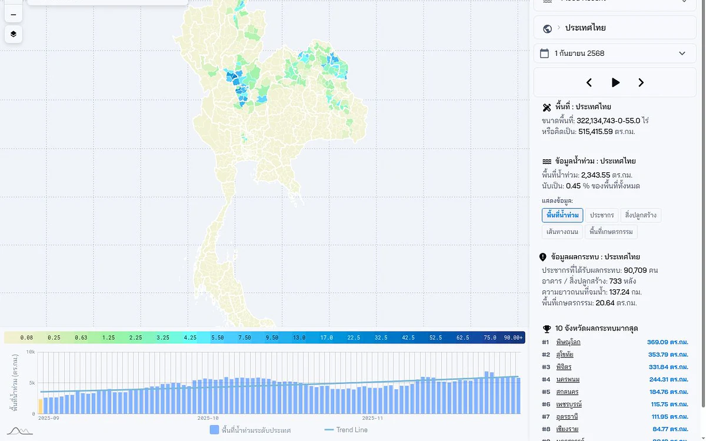

CityMETER · Living
น้ำท่วมที่ตรวจพบล่าสุด
ดูร่องรอยพื้นที่น้ำท่วมที่ตรวจพบจากดาวเทียมตามวันของภาพ เพื่อเข้าใจภาพเหตุการณ์และเลือกจุดติดตามต่อ
เปิดข้อมูลบนแผนที่ ↗
เริ่มจากวันที่สังเกต ก่อนอ่านขอบเขตน้ำ
ขอบเขตที่เห็นเป็นภาพของช่วงเวลาหนึ่ง อ่านวันที่ตรวจพบพร้อมบริบทลุ่มน้ำ แล้วใช้เลือกพื้นที่ที่ต้องสอบถามสถานการณ์ภาคสนามหรือเทียบกับรายงานเหตุการณ์เพิ่มเติม
ข้อมูลดาวเทียมมีช่วงเวลาที่สังเกตและข้อจำกัดการตรวจจับ จึงไม่ใช่แผนที่สถานการณ์สด และพื้นที่ว่างไม่ได้ยืนยันว่าปลอดภัย
ลองเริ่มจากสองคำถามนี้
- ขอบเขตที่เห็นตรวจพบเมื่อใด?
- พื้นที่ใดควรติดตามข้อมูลภาคสนามเพิ่ม?
ดูพื้นที่ที่คุณสนใจต่อ
ตรวจวันของภาพและประกาศในพื้นที่ก่อนตัดสินใจเดินทางหรือปฏิบัติงาน
อ่านต่อจากต้นทาง
แหล่งอ้างอิง ช่วงเวลา และขอบเขตข้อมูล
แหล่งที่เกี่ยวข้อง — ยังไม่ยืนยันว่าเป็นข้อมูลรุ่นเดียวกัน
- ผู้เผยแพร่ข้อมูล
- GISTDA flood boundary (candidate)
- ที่มา
- ข้อมูลขอบเขตน้ำท่วมของ GISTDA เป็นแหล่งอ้างอิงที่เกี่ยวข้อง แต่ยังต้องยืนยันไฟล์ วันที่สังเกต และวิธีซ้อนข้อมูลสิ่งที่อยู่ในพื้นที่น้ำท่วม
- ช่วงเวลาของข้อมูล
- ยังไม่ยืนยันช่วงเวลา — ตรวจวันอ้างอิงในหน้าข้อมูลก่อนใช้
- พื้นที่ครอบคลุม
- มีหน้าสรุประดับประเทศไทย แต่ขอบเขตข้อมูลต้นทางยังไม่ระบุ
- ระดับรายละเอียด
- พื้นที่น้ำท่วมตามวันที่ตรวจพบ พร้อมการซ้อนทับข้อมูลพื้นที่
อ่านแหล่งอ้างอิง
เมื่อจะนำข้อมูลไปเปรียบเทียบหรืออ้างอิง
ข้อมูลที่ตรวจพบล่าสุดเป็นภาพตามวันที่ระบุ ไม่ใช่สถานการณ์สด
ร่วมพัฒนาโดย
 ยิ้วSoftware development
ยิ้วSoftware development

สแกนเพื่อเปิดข้อมูลนี้ใน CityMETERเปิดข้อมูลบนแผนที่ (เปิดแท็บใหม่)
แชร์สรุปนี้
ส่งให้คนที่กำลังศึกษาเรื่องนี้ด้วยกัน